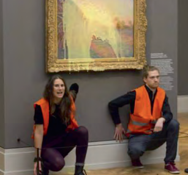

Debattierwettbewerb
Dieser Beitrag erschien ursprünglich im Spickzettel/März 2023. Aus datenschutztechnischen Gründen wurden personenbezogene Daten mit einem Hashtag ersetzt. Zur Originalausgabe
Hierbei vertraten in der Altersgruppe 1 # aus der Klasse 9/4 sowie # aus der 9/1 die Position Pro, # und # von der 9/4 Contra, also die Seite, die dagegenspricht. In der Altersgruppe 2 repräsentierten # und # Pro, # und # Contra. Wobei Pro der Jahrgangsstufe 12 und Contra der Jahrgangsstufe 10 zuzuordnen war. Die beiden Debatten nahmen schließlich stattliche zweieinhalb Stunden ein, weshalb es nahezu unmöglich ist, diese auf einem einzigen A4-Blatt festzuhalten, deshalb hier nur ein kleiner Einblick in die Thematik. Zunächst wurde die Frage erörtert, ob beispielshalber ein zu kurzes Outfit Lernende und Unterrichtende vom Unterricht ablenken würde und dementsprechend eine Einschränkung dessen angemessen wäre. Auslöser dafür war unter anderem eine E-Mail der damaligen Elternsprecherin Mitte 2021. Diese Mail ging ausschließlich an Eltern von Schülerinnen und beinhaltete eine Aufforderung, die Wahl der Garderobe besser zu beaufsichtigen.
Meiner Meinung nach wirft das Ganze zwei große politische Themen auf: Erstens: Würde eine Kleiderordnung an einer öffentlichen, staatlichen Schule das Recht auf Meinungs- und Handlungsfreiheit sowie das Recht freie Entfaltung der Persönlichkeit einschränken? Und wenn ja, was geht das, was ich anhabe die anderen eigentlich an? Es liegt ja wohl bei mir zu entscheiden, wie ich aus dem Haus gehe und was ich als ‚angemessene Kleidung‘ empfinde. Oder etwa nicht? Offiziell hat die Schule gegenüber den Schülern „eine pädagogische Aufgabe, sodass auch ein Bedürfnis nach generellen Regelungen hinsichtlich disziplinarischen Verhaltens bestehen kann.“ Auch wurde damit argumentiert, dass man ohne eine Kleiderordnung auch sexuelle Belästigungen in Kauf nehme. Die Freizügigkeit der Kinder führte schon immer wieder zu Anmachsprüchen, sowie im schlimmsten Fall zu Gewalthandlungen. Und wie man es auch wendet dies wünscht natürlich niemand seinem Kind. Und zweitens: Ist es, trotz der Tatsache, dass dies mehr Angehörige des weiblichen Geschlechts betreffen würde, okay, diese Mitteilung einzig und allein an Erziehungsberechtigte der Schülerinnen zu senden?
Eine Schule mit Courage, eine Schule mit Gleichheit, eine Schule mit Unisextoiletten, eine Schule mit Mitteilungen, die nach Geschlecht gefiltert werden – finde den Fehler. Demgegenüber habe ich zumindest noch nie einen Jungen mit „zu freizügiger Bekleidung“ in unserer Schule gesehen. Und doch leben wir in einer Gesellschaft, die immer mehr auf Gleichberechtigung und Antisexismus setzt. Welchen Unterschied hätte es eigentlich gemacht, die Mail an alle Elternteile zu versenden? Im Zentrum der zweiten Debatte stand die Frage, wie weit Protest im Rahmen des Klimaschutzes gehen darf, ob man beispielsweise Klimaaktivisten härtere Strafen zuweisen sollte und ob es gerechtfertigt sei, Kunstwerke zu beschädigen, nur um an Aufmerksamkeit zu gelangen? Gestartet mit einer kurzen Aufzählung von Städten, in denen genau dies geschah, gefolgt von der Aussage, dass die deutsche Regierung nicht immer das Gesetzbuch ändern könne, wenn's brenzlig wird und beendet mit der Behauptung, dass genau dies erforderlich sei, um eine Radikalisierung Deutschlands noch rechtzeitig einzudämmen und Plexiglasscheiben nun einfach nicht genügen würden – brach ein anschaulicher Wortwechsel aus, der von Kunstfreiheit zu Klimaprotesten, bis hin zu Vorwürfen, dass der Staat seine Aufgabe in Bezug auf den Klimaschutz nicht erfüllt habe, reichte. Auch ein wichtiger Aspekt: auf der einen Seite heißt es, dass man Sachbeschädigungen an berühmten Objekten nicht in Kauf nehmen dürfe, nur um an Aufmerksamkeit zu gelangen. Auf der anderen nimmt man Kratzer und Klebstoffreste an Bilderrahmen ja in Kauf um ‚uns und unseren Planeten‘ zu retten – das muss man sich erst einmal bewusst machen. Aktivisten denken sich nicht einfach nur: „Ach du, lass heute ma‘ Bolognese á la Da Vinci machen“, nein, wenn wir nicht aktiv gegen den Klimawandel handeln, war‘s das für uns. Die letzten dreißig, vierzig Jahre haben wir dies größtenteils ignoriert und unsere Taten hielten sich offengesagt in Grenzen. Durch beispielsweise Klebeaktionen oder dem Randalieren an bedeutenden Orten oder Objekten haben Aktivisten endlich ein bisschen mehr Aufmerksamkeit zugesprochen bekommen – und was blieb ihnen groß anderes übrig?
Beide Debatten waren sehr anschaulich und haben einen soliden Einblick in die beiden Problematiken gegeben. Ich fand es erstaunlich, wie einfach der Meinungsaustausch rüberkommt, wie mühelos ihr Debattierenden in eure Rollen und Meinungen geschlüpft seid. Ich persönlich könnte mir das nie vorstellen – ziehe ein Los, ok, ich bin jetzt mal dagegen. Die Debattierenden dagegen haben genau dies getan und im Nachhinein war es praktisch unmöglich zu sagen, was nun die persönliche Meinung jedes Einzelnen war. Auch einen „Sieger“ zu küren war schließlich nur mithilfe einer Abstimmung möglich. Der Jury Aufgabe war es darüber hinaus, die zwei zu wählen, welche für unsere Schule erst in den regionalen und gegebenenfalls auch in den landesweiten Wettbewerb zu ziehen. Und hier nun schließlich die Ergebnisse:
Da es ihre erste Debatte war, bereitete sich # darauf vor, von der Bewertung ausgeschlossen zu werden. Den vierten Platz belegte #, den dritten erreichten # und #; auf dem zweiten landeten # und #. Und das Siegerpodest konnten # und # besteigen, die dann auch für das RoRo weiterziehen werden und wer weiß, vielleicht auch den Titel holen.
Die Ergebnisse der nächsten Runde, der Regionalmeisterschaft, sind schon da, aber dazu mehr in der nächsten Ausgabe.
Jeremias Ruff, in: Spickzettel
2023/03
